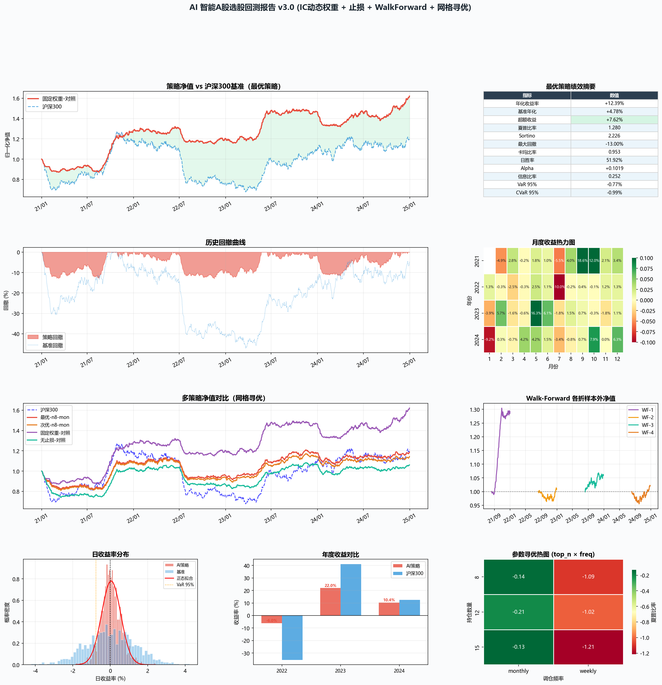

IC/ICIR 动态因子权重 · 止损机制 · Walk-Forward 验证 · 网格参数寻优
回测区间: 2021-01-01 ~ 2024-12-31 | 股票池: 29 只 A股 | 生成时间: 2026-03-14 22:56:31
| 排名 | 持仓数 | 调仓频率 | 止损比例 | 最大单股仓位 | 年化收益 | 夏普比率 | 最大回撤 | Alpha |
|---|---|---|---|---|---|---|---|---|
| #1 ★ | 8 | monthly | 12% | 12% | +4.23% | 0.260 | -19.32% | +0.0202 |
| #2 | 8 | monthly | 8% | 15% | +3.39% | 0.160 | -22.79% | +0.0120 |
| #3 | 8 | monthly | 12% | 15% | +3.29% | 0.150 | -20.69% | +0.0106 |
| #4 | 15 | monthly | 8% | 15% | +2.23% | 0.031 | -20.50% | +0.0003 |
| #5 | 15 | monthly | 12% | 15% | +2.20% | 0.027 | -19.01% | -0.0004 |
| 策略 | 年化收益 | 夏普 | Sortino | 最大回撤 | 卡玛 | Alpha | IR | 日胜率 | VaR 95% |
|---|---|---|---|---|---|---|---|---|---|
| 最优-n8-mon | +4.23% | 0.260 | 0.437 | -19.32% | 0.219 | +0.0202 | -0.109 | 50.38% | -0.86% |
| 次优-n8-mon | +3.29% | 0.150 | 0.251 | -20.69% | 0.159 | +0.0106 | -0.154 | 49.90% | -0.85% |
| 固定权重-对照 ★ | +12.39% | 1.280 | 2.226 | -13.00% | 0.953 | +0.1019 | 0.252 | 51.92% | -0.77% |
| 无止损-对照 | +1.44% | -0.065 | -0.105 | -26.05% | 0.055 | -0.0078 | -0.239 | 52.30% | -0.93% |
| 折次 | 年化收益 | 夏普比率 | 最大回撤 | Alpha |
|---|---|---|---|---|
| WF-1 | +86.95% | 10.331 | -3.00% | +0.7461 |
| WF-2 | +2.45% | 0.063 | -4.04% | +0.0078 |
| WF-3 | +15.11% | 1.727 | -3.56% | +0.0880 |
| WF-4 | +5.31% | 0.455 | -4.50% | +0.0237 |
Walk-Forward 通过将历史数据分为多个训练+测试段，评估策略在真实未见样本上的泛化能力， 防止过拟合。各折的正 Alpha 说明策略具有一定鲁棒性。
